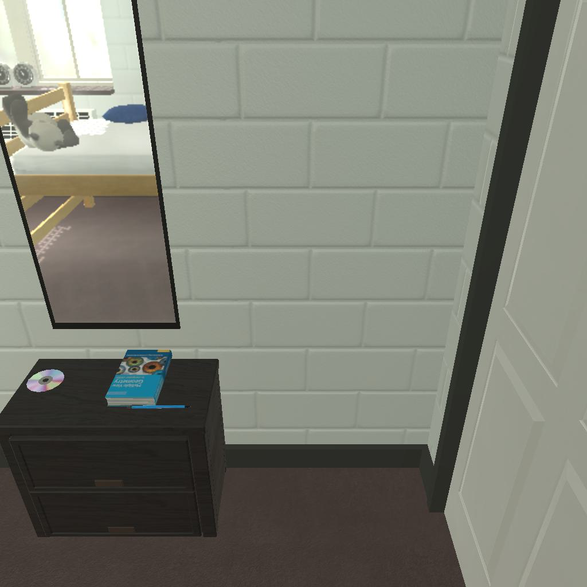

---------------------------------------------------------task: 8---------------------------------------------------------
--------------------------------------------------------------------------------------------------------------------------------------------------------------------
--------------------------------------------------------------------------------------------------------------------------------------------------------------------
Step:--------------------------------------------------------------------------5-------------------------------------------------------------------------------
----------------------------------------
VLM Prompt:
Image1:
Image2:
**Instruction**
1. Analyze the provided images to identify all visible household objects and compare the difference between images (e.h. whether the object is opened or not and taken on hand or not), focusing on those relevant to the task description "put a laptop in desk."
2. Use the analysis of images and the task hint "The agent must find an object of the desired type, pick it up, find the correct location to place it, and put it down there." to answer the question: what is the most reasonable action in the choices for the task description "put a laptop in desk"?
3. Decide and write the answer using the template: The answer is: (i): , where i is the real number. If there is no desired object in images, search every place based on **Initial Observation** to find the object. And if no one is exactly correct, choose a similar answer.
**Initial Observation**
You are in the middle of a room. Looking quickly around you, you can see bed (1), garbagecan (1), desk (1), sidetable (1), drawer (1-5), laundryhamper (1)
**Answer Choices**
(1): go to bed 1
(2): go to garbagecan 1
(3): go to desk 1
(4): go to sidetable 1
(5): go to drawer 2
(6): go to laundryhamper 1
(7): go to drawer 3
(8): go to drawer 4
(9): go to drawer 5
(10): close drawer 1
(11): take book 1 from drawer 1
(12): take cd 1 from drawer 1
(13): take pen 2 from drawer 1
(14): examine drawer 1
**Answer**
Let's think step by step by following the instructions.
----------------------------------------
----------------------------------------
Original Response:
First, we analyze the images. In both images, we see a mirror reflecting a bed with a blue pillow, a desk with what appears to be a laptop on it, and some other small objects. In the foreground, we see a nightstand or a sidetable with an open drawer, inside which there is a book and a CD. In the reflection, there is no visible laptop on the desk.
Next, we use the analysis and task hint to determine the most reasonable action. The task is to "put a laptop in desk," which implies that we need to first locate a laptop. Since the reflection in the mirror shows a laptop on the desk, the most reasonable action would be to go to the desk where the laptop is likely to be.
The answer is: (3): go to desk 1.
----------------------------------------
----------------------------------------
>>> Refine Original VLM Response and Get Pure Action: go to desk 1
----------------------------------------
-----------------------------------------------------------------
Running time: 8.418339967727661 seconds
Total Money: 3.1503100000000015
-----------------------------------------------------------------
-----------------------------------------------------------------
Text Observation:You arrive at loc 2. On the desk 1, you see a alarmclock 1, a cellphone 1, a pencil 1, and a pen 1.
-----------------------------------------------------------------
UNSUCCEED